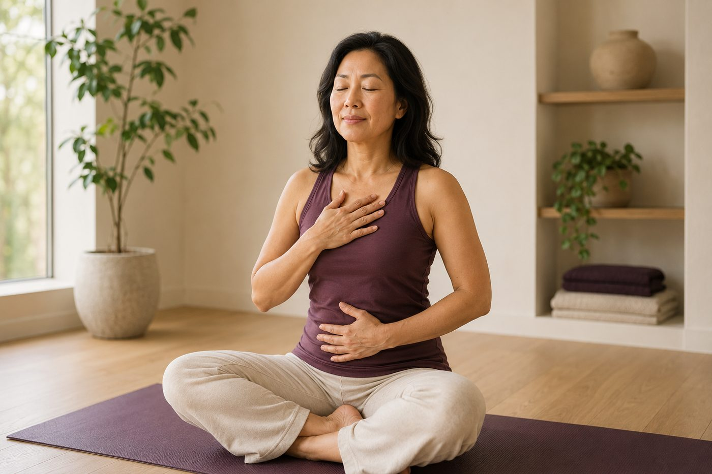

瑜伽練習時，怎麼用呼吸調整幅度和節奏？

同學的動作快做到底了，你也再往下一點。直到老師提醒「慢慢呼吸」，你才注意到自己剛才一口氣都沒換。
瑜伽練習中，呼吸可以當作調整幅度與節奏的線索。動作變大、節奏變快，或刻意維持姿勢時，呼吸可能跟著變急或停住。先縮小幅度、增加支撐或回到舒服的姿勢，看看呼吸有沒有改變。呼吸是否順暢不能單獨判定動作風險，也不能用來診斷身體狀況。
做到一半屏住氣，要怎麼調整動作？
可以先回到你能停住、能慢慢返回的位置。比較「做到很深」和「少做一點」時，哪個版本比較容易保持自然呼吸。如果想先在靜止的位置熟悉自己的呼吸節奏，可讀腹式呼吸入門。
👆 手機版可左右滑動
| 練習時注意到 | 可先調整 | 怎麼觀察 |
|---|---|---|
| 口令一快就屏氣 | 用自己的速度做小一點。 | 能否在移動中持續呼吸。 |
| 停住時開始聳肩 | 縮短停留，或換成有支撐的姿勢。 | 放下用力後感受是否不同。 |
| 越做越不舒服 | 停止該動作，告知老師。 | 呼吸順暢不代表可以忽略其他不適。 |
想慢一點練，支撐能提供什麼？
試著用椅面、牆面或老師安排的輔具支點，比較手腳有地方放時，注意力能不能回到呼吸。想理解輔具托住身體的課型，可看修復瑜伽的基本做法；如果卡在老師的口令，可先讀吸吐和動作的配合方式。
常見問題
呼吸不順就表示動作做錯了嗎？
可以把它當作縮小幅度或放慢節奏的提醒。它不能單獨說明是否做錯或有受傷風險。
需要用力拉長吐氣才算放鬆嗎？
先讓呼吸維持自然、舒服的節奏，無須以拉長秒數當作練習目標。
先記下最有感的日常時刻
先記下哪個姿勢或幅度最容易讓你硬撐。
約 2 分鐘，免登入、免加 LINE。做完可用 3 天觀察卡整理日常感受。
開始免費 2 分鐘體態訊號掃描 →延伸閱讀 想先靜下來感受呼吸，可看腹式呼吸入門